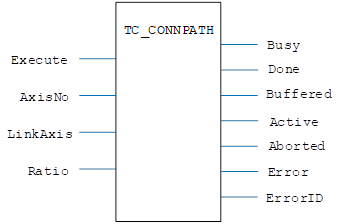
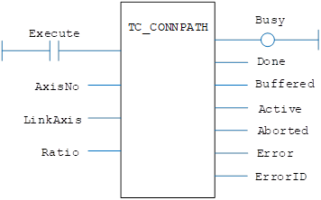

Motion Function.
Enables you to link to the path of an interpolated movement by linking the demand position of the base axis, to the interpolated path distance of the driving axis.
|
Rising edge requests execution |
|
|
AxisNo : USINT; |
Axis number |
|
LinkAxis : USINT; |
Link axis number |
|
Ratio : LREAL; |
Connect ratio: axis_counts/linkaxis_counts |
|
Busy : BOOL; |
TRUE if function is running |
|
Done : BOOL; |
TRUE when function has completed normally |
|
Buffered : BOOL; |
TRUE when motion command is in NTYPE buffer |
|
Active : BOOL; |
TRUE when motion command is in MTYPE buffer |
|
Aborted : BOOL; |
TRUE if function terminates due to CANCEL |
|
Error : BOOL; |
TRUE if a program error is detected |
|
ErrorID : UINT; |
Returned error number |
When the execute input changes from FALSE to TRUE (rising edge), the function block attempts to load the motion command into the required axis buffer. If the buffer is unavailable, the function re-tries on each PLC scan. Once the motion command has been loaded, the appropriate outputs will indicate the state of the motion; in NTYPE, MTYPE, aborted (Cancelled) or done.
A programming error, such as parameter out of range, will set the Error output and return an error ID number. For the Error ID reference, see the Trio Programming error list.
The function must be in the processing scan and the Execute input TRUE for the outputs to correctly show the status of the move.
MyTC_CONNPATH(Execute, AxisNo, LinkAxis, Ratio);
Busy := MyTC_CONNPATH.Busy;
Done := MyTC_CONNPATH.Done;
Buffered := MyTC_CONNPATH.Buffered;
Active := MyTC_CONNPATH.Active;
Aborted := MyTC_CONNPATH.Aborted;
Error := MyTC_CONNPATH.Error;
ErrorID := MyTC_CONNPATH.ErrorID;


Not available.
TrioBasic Error List